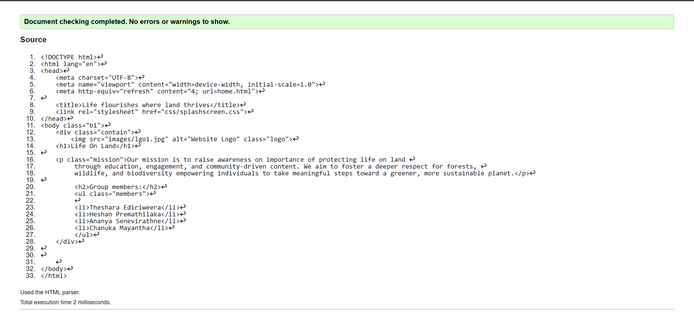
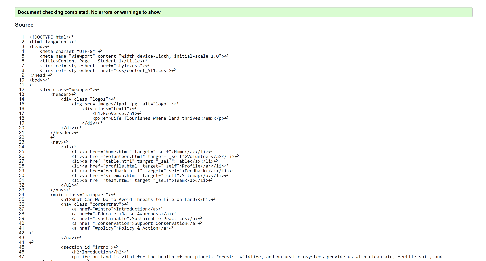

Theshara Ediriweera - Student 1
Splash page validation report
The Splash page passed validation without any errors or warnings. <http-equiv="refresh" content="4;> used to change the page after 4s was properly recognized and validated.

Back to Page Editor page
Volunteer Page validation report
The volunteer page was validated successfully without any errors or warnings. The page met accessibility requirements with labelled headers and alt text for images.

Back to Page Editor page
Content Page validation report
The content page passed validation with proper use of anchor based navigation and semantic sectioning. A scroll-margin-top feature was used to fix anchor jump issues due to fixed navigation bar, which was validated as well.
